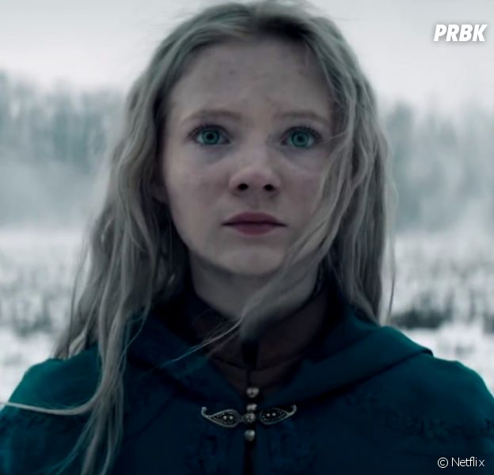
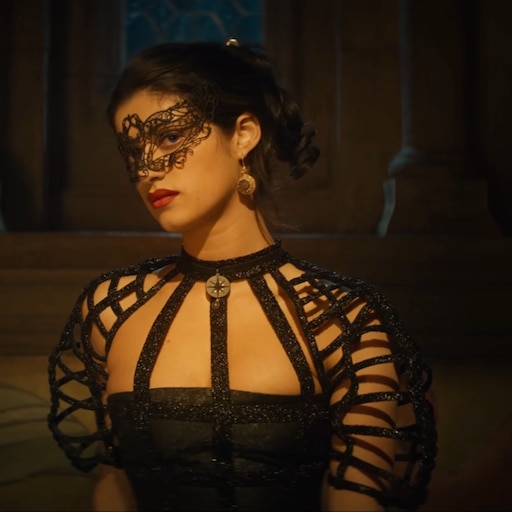
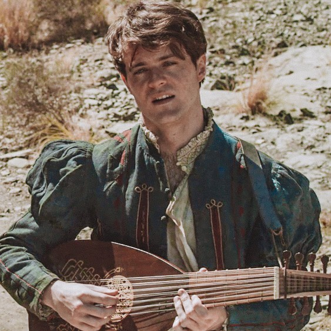

Geralt of Rivia
Geralt of Rivia is een witcher. Een witcher is een mens die een bepaalde mutatie is ondergaan met als doel een mens sterk genoeg maken om tegen monsters te vechten. Witcher hebben een hartslag die veel trager is dan een gemiddeld mens hierdoor wordt vergif minder snel over hun lichaam verspreid. Een witcher heeft 2 zwaarden: een zilveren zwaard voor monsters en een ijzeren zwaard voor mensen. Hij is meestal best chagerijnig en bezit een goede dosis sarcasme.

Ciri
Ciri, ook wel Cirilla Fiona Elen Riannon genoemd is de dochter van Pavetta en Duny en de kleindochter van koningin Calanthe. Ciri is de rechtmatige opvolger van de troon van Cintra. Calanthe wordt de leeuwin van Cintra genoemd en Ciri de leeuwenwelp van Cintra. Ciri bezit een soort magische krachten die Pavetta ook bezat, het is nu nog niet duidelijk hoe ze aan die krachten komt en wat ze inhouden.

Yennefer
Yennefer, is een tovenares. Ze was geboren met een bochel en een scheef gezicht totdat ze toegelaten werd tot de school van magie: Aretuza. Haar docent was Tissaia de Vries. Yennefer had eerst geen aanleg voor de magie, maar later wel. Haar schoonheid heeft ze verkregen door haar vruchtbaarheid op te offeren. Haar relatie met Geralt is erg complex en interessant om te zien. Yennefer komt een beetje arrogant over, maar kan dat opzij zetten als het nodig is.

Jaskier
Jaskier is een rondtrekkende bard die met zijn muziek en poëzie mensen vermaakt. Hij heeft poëzie gestudeert op de universiteit van Oxenfurt (hij is dus erg slim ookal lijkt dat niet zo). Hij is Geralt zijn beste vriend en levert vaak de komische en domme momenten in de serie. In de boeken en games wordt Jaskier, Dandelion genoemt in het Engels en in het Nederlands wordt hij Ranonkel genoemd. Dandelion betekent boterbloem en Ranonkel betekent paardebloem.
